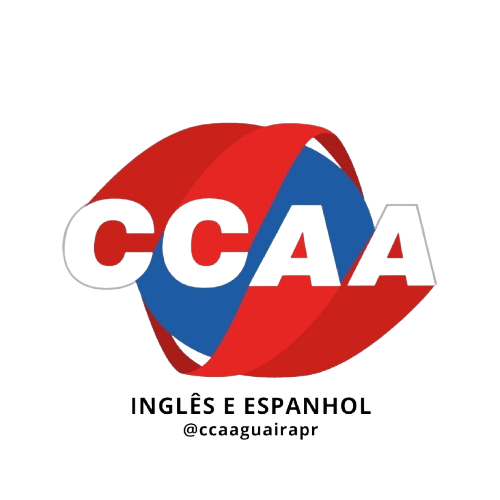
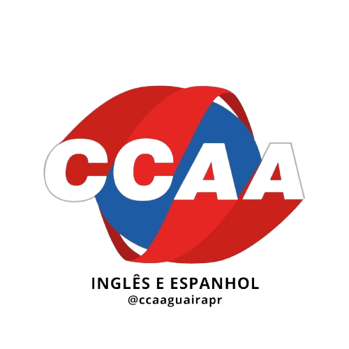

História da Feira
Conheça a trajetória da Feira Fatech ao longo dos anos.
-

2009-2011
O Começo de Tudo!
A Feira Fatech começou como um pequeno projeto escolar, reunindo os primeiros trabalhos dos cursos técnicos e incentivando a criatividade dos alunos dos cursos de Desenvolvimento de Sistemas e de Administração em soluções práticas.
-

2012-2015
Expansão dos Projetos
Os projetos ganharam mais diversidade e complexidade, com os alunos dos cursos de Desenvolvimento de Sistemas e de Administração explorando áreas como tecnologia, ciência e inovação, tornando a feira mais atrativa para toda a comunidade escolar.
-

2016-2019
Consolidação e Reconhecimento
A feira passou a ser reconhecida como um espaço de inovação, reunindo projetos de destaque e fortalecendo a participação da comunidade escolar, professores e visitantes.
-

2020-Presente
Inovação com Tecnologia
Hoje, a Feira Fatech integra tecnologia, como o sistema de avaliação com inteligência artificial, e continua reunindo alunos dos cursos de Desenvolvimento de Sistemas e de Administração, professores e a comunidade para celebrar criatividade e aprendizado.
-
Faça Parte
Da Nossa
História!
 
